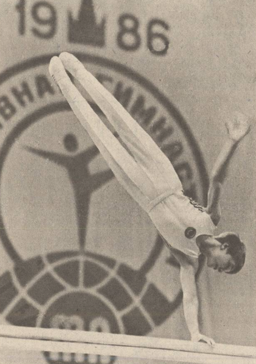

Alexander Kolyvanov (USSR/RUS)
1986 and 1988 Jr. European AA Champion

Alexander was born on December
6, 1971 in Moscow. He was coached by Mikhail Genkin, first at CSKA Moscow
and then at Spartak Voronezh. A star on the Soviet junior team, he
unfortunately never had quite the same success as a senior. He was the alternate at the 1992 Olympics in Barcelona. After
retiring, Alexander moved to the USA and took a position as an assistant coach
at the University of Iowa from 1993 to 2010. In 2011 he and his wife Oksana opened their own gym, Synergy Gymnastics, in North Liberty, Iowa. They have two children: son Evgeny and daughter Olesia.
Competition Results
- 1986
- Champions All: 5th AA
- Jr. European Championships: 1st AA, 1st pH, 4th FX,
4th R, 4th HB, 6th V
- Jr. Friendship Tournament (Druzhba): 1st Team, 1st AA,
1st PH, 1st PB, 2nd FX, 5th HB
- Jr. GDR-USSR Dual Meet: 1st Team, 3rd AA
- Moscow News: 4th AA, 1st PB, 3rd PH
-
- 1987
- Jr. Friendship Tournament (Druzhba): 1st Team, 3rd AA,
1st PB, 3rd HB, 6th V
- Jr. GDR-USSR Dual Meet: 1st Team, 1st AA
-
- 1988
- Jr. European Championships: 1st AA, 1st FX, 1st PH,
2nd PB, 2nd HB, 4th V, 4th R
- Jr. Friendship Tournament (Druzhba): 1st Team, 9th AA,
1st PH
- Jr. USSR Championships: 1st AA
-
- 1989
- DTB Cup: 11th AA
- Jr. European Team Championships: 1st Team, 1st FX,1st PH, 1st VT, 1st HB
- World Sports Fair: 14th AA
-
- 1990
- American Cup: 1st AA
- Blume Memorial: 2nd AA
- Chunichi Cup: 2nd AA, 1st V, 2nd PH, 2nd PB, 3rd FX,
7th HB
- GER-USA-USSR Tri-Meet: 1st Team, 1st AA
- Tokyo Cup: 6th PH, 6th HB
World Stars: 5th AA, 1st PH
USSR Championships: 1st HB
USSR Cup: 1st PB
-
- 1991
- Blume Memorial: 7th AA
- Rome Grand Prix: 6th AA
Torino Grand Prix: 1st HB
- USSR Spartakiade: 6th AA
- World Stars: 9th AA
-
- 1992
- Champions All: 1st AA
CIS Championships: 2nd AA
CIS Cup: 7th AA, 2nd PH
- European Championships: 4th AA, 7th FX, 7th PH
RSFSR Championships: 1st AA, 1st FX, 1st PH, 1st V, 1st PB, 1st HB
World Stars: 7th AA, 3rd FX, 6th PH, 6th PB
-
- 1993
- International Champs. of Romania: 2nd AA
Kosice International: 3rd AA
RUS Cup: 2nd AA
World Stars: 1st AA, 1st V, 1st PB
This page was last updated on May 15, 2026.
© Gymn Forum